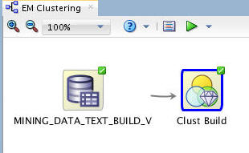
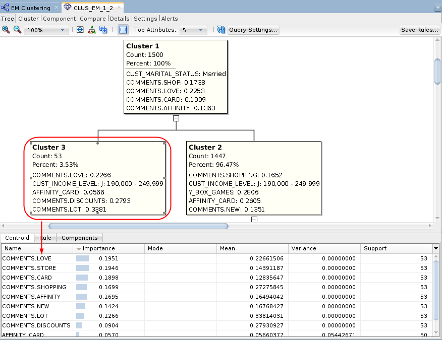
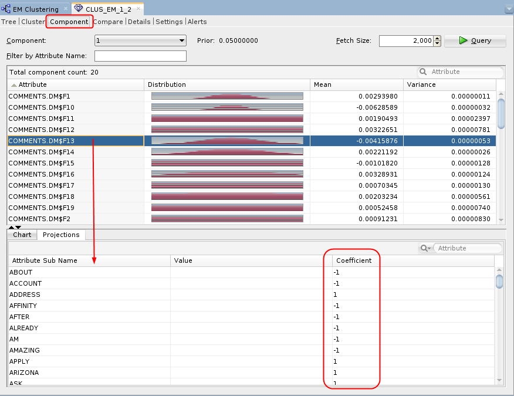
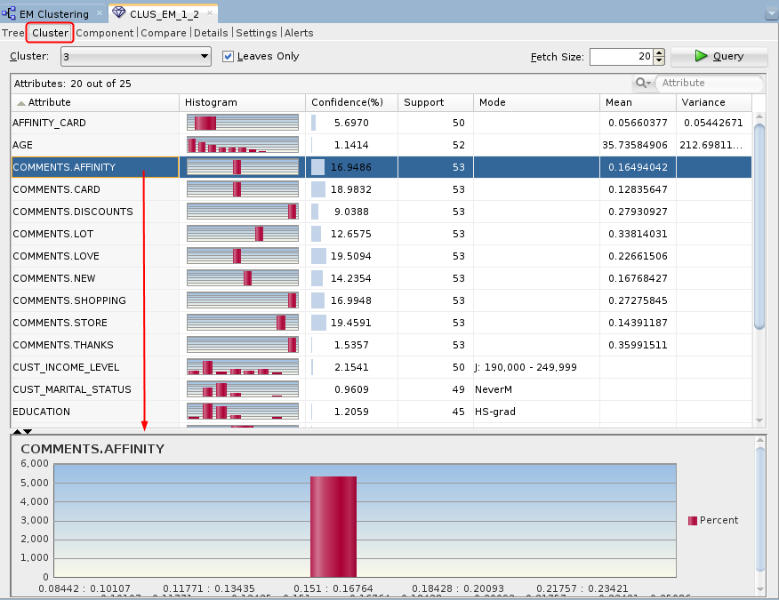
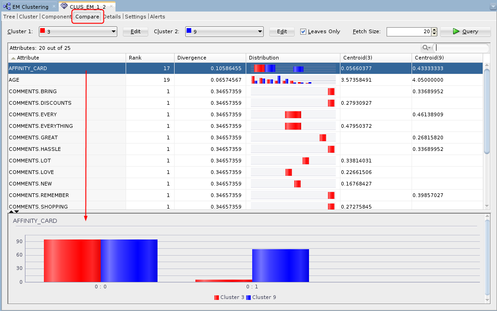
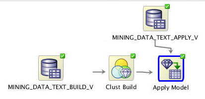
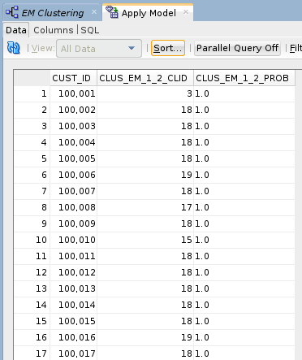
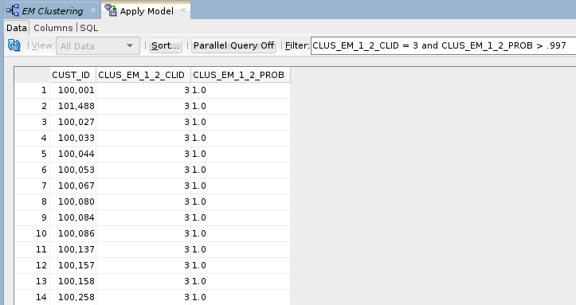

Build
An Expectation Maximization Clustering Model
Build
An Expectation Maximization Clustering Model Before You Begin
Before You Begin
This 15-minute tutorial shows you how to build an expectation maximization (EM) clustering model using a text-based data source.
Background
In addition to the existing k-Means and O-Cluster algorithms, Oracle Data Mining now supports Expectation Maximization, a clustering algorithm that creates a density model of the data. The density model allows for an improved approach to combining data originating in different domains. For example, EM enables combination of structured data (such as sales transactions and customer demographics) with unstructured data, such as text data.
What Do You Need?
- Oracle Database 19c Enterprise Edition
- Oracle SQL Developer version 19.x
- Oracle Data Miner User Account
- Data Miner Workflow for Text Mining
 Build
the Model and View the Results
Build
the Model and View the Results
- Right-click the Clust Build node and select Run from the
pop-up menu.

Description of the illustration build-model.jpg When the build is complete, all nodes contain a green check mark in the node border
- Right-click the clustering build node again, and select View
Models > CLUS_EM_1_3 (Note: The automatically
generated name of your Clustering model may be different than
shown here.)
The Edit Classification Build Node window automatically appears.
- Select Cluster 2, which represents the
slightly larger cluster after the split.

Description of the illustration cluster3-tree.png The bottom pane contains three tabs: Centroid, Rule, and Components. The Centroid tab displays a list of the attribute values that best define the selected cluster, ranked by importance.
- Select the Component tab.

Description of the illustration component-tab.png The Component tab includes distribution plots of the ranked text mining results. In this tab, the bottom pane provides two tabs: (A) The Chart tab provides a larger view of the selected attribute’s distribution chart. (B) The Projections tab (shown in the example) provides a list of the Attribute Sub Name values that best describe the selected attribute. Here, we sorted the list in descending order by Coefficient value.
- Select the Cluster tab.

Description of the illustration cluster-tab.png In this example, Cluster 3 is selected. This is the same cluster that we selected in the Tree viewer. The Cluster tab shows a list of contributing attributes, ranked by Confidence %. A histogram of the selected attribute is shown in the bottom pane.
- Select the Compare tab.

Description of the illustration compare-tab.png The Compare tab shows a list of contributing attributes for the selected clusters, sorted by Rank of importance. In this example, Clusters 2 and 3 are compared. A distribution histogram of the selected attribute is shown in the bottom pane
- Dismiss the model viewer window.
 Apply
the Model to Make Predictions
Apply
the Model to Make Predictions
- Add a new Data Source node in the workflow:
- From the Data group in the Components tab, drag and drop a Data Source node to the workflow pane, as shown below. The Define Data Source wizard opens automatically.
- Select the MINING_DATA_TEXT_APPLY_V view in Step 1 of the wizard.
- Click Finish to save the data source definition.
- Expand the Model Operations category in the Components tab and drag an Apply node to the workflow canvas.
- Connect the Clust Build node to the Apply node, and then connect the MINING_DATA_TEXT_APPLY_V node to the Apply node.
- Add the customer id to the output:
- Right-click the Apply Model node and select Edit.
- In the Predictions tab of the Edit Apply Node window, select CUST_ID as the Case ID.
- Click OK in the Edit Apply Node window to save your changes.
- Right-click the Apply Model node and select Run
from the menu.

Description of the illustration run-em-model.jpg When the process is complete, green check mark icons are displayed in the border of all workflow nodes to indicate that the server process completed successfully.
 View
the Results
View
the Results
- Right-click the Apply Model node and select View Data from the Menu.
- Click the Sort button, and specify a sort using the prediction probability, in descending order.
- Click Apply Sort to view the results.

Description of the illustration apply-model-results.png - You can enter a Where clause in the Filter box to narrow the
output results.
- Enter the following Where clause:
CLUS_EM_1_2_CLID = 3 and CLUS_EM_1_2_PROB > .997 - Press Enter.

Description of the illustration apply-model-filter.png The results should show records for those customers who are predicted to be in Cluster 3, with a probability greater than 99.7%.
Each time you run an Apply node, Oracle Data Miner may take a different sample of the data to display. With each Apply, both the data and the order in which it is displayed may change. Therefore, the sample in your table may be different from the sample shown here. This is particularly evident when only a small pool of data is available, which is the case in the schema for this lesson.
- Enter the following Where clause:
- When you are done viewing the results, dismiss the Apply Model window, and click Save All.